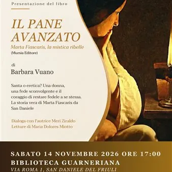

sab 14 nov · dalle 17:00
Il pane avanzato
👉 Una storia vera di fede, coraggio e libertà prende vita tra le pagine di "𝐈𝐥 𝐩𝐚𝐧𝐞 𝐚𝐯𝐚𝐧𝐳𝐚𝐭𝐨 - 𝐌𝐚𝐫𝐭𝐚 𝐅𝐢𝐚𝐬𝐜𝐚𝐫𝐢𝐬, 𝐥𝐚 𝐦𝐢𝐬𝐭𝐢𝐜𝐚 𝐫𝐢𝐛𝐞𝐥𝐥𝐞", il libro di 𝐁𝐚𝐫𝐛𝐚𝐫𝐚 𝐕𝐮𝐚𝐧𝐨 (Mursia Editore), che racconta la vicenda di una donna anticonformista, capace di sfidare le convenzioni del suo tempo e…
 Indicazioni
Indicazioni
- Costi e prenotazioni
- Costo non indicato · Prenotazione non indicata
- Programma
- Programma da verificare. Apri la fonte ufficiale per orari e possibili aggiornamenti.
- In caso di maltempo
- Nessuna indicazione specifica pubblicata.
- Note
- Acquisito automaticamente dalla fonte.
L’EVENTO
Descrizione completa
📖 𝐈𝐋 𝐏𝐀𝐍𝐄 𝐀𝐕𝐀𝐍𝐙𝐀𝐓𝐎 – 𝐋𝐀 𝐒𝐓𝐎𝐑𝐈𝐀 𝐃𝐈 𝐔𝐍𝐀 𝐌𝐈𝐒𝐓𝐈𝐂𝐀 𝐑𝐈𝐁𝐄𝐋𝐋𝐄 ✨
👉 Una storia vera di fede, coraggio e libertà prende vita tra le pagine di "𝐈𝐥 𝐩𝐚𝐧𝐞 𝐚𝐯𝐚𝐧𝐳𝐚𝐭𝐨 - 𝐌𝐚𝐫𝐭𝐚 𝐅𝐢𝐚𝐬𝐜𝐚𝐫𝐢𝐬, 𝐥𝐚 𝐦𝐢𝐬𝐭𝐢𝐜𝐚 𝐫𝐢𝐛𝐞𝐥𝐥𝐞", il libro di 𝐁𝐚𝐫𝐛𝐚𝐫𝐚 𝐕𝐮𝐚𝐧𝐨 (Mursia Editore), che racconta la vicenda di una donna anticonformista, capace di sfidare le convenzioni del suo tempo e restare fedele a se stessa.
📅 𝐒𝐀𝐁𝐀𝐓𝐎 𝟏𝟒 𝐍𝐎𝐕𝐄𝐌𝐁𝐑𝐄 𝟐𝟎𝟐𝟔 🕔 Ore 𝟏𝟕:𝟎𝟎
📍 𝐁𝐢𝐛𝐥𝐢𝐨𝐭𝐞𝐜𝐚 𝐆𝐮𝐚𝐫𝐧𝐞𝐫𝐢𝐚𝐧𝐚 (Via Roma 1)
📌 𝙄𝙣𝙜𝙧𝙚𝙨𝙨𝙤 𝙡𝙞𝙗𝙚𝙧𝙤 𝙛𝙞𝙣𝙤 𝙖 𝙚𝙨𝙖𝙪𝙧𝙞𝙢𝙚𝙣𝙩𝙤 𝙙𝙚𝙞 𝙥𝙤𝙨𝙩𝙞
🎤 Dialoga con l'autrice 𝐌𝐞𝐫𝐢 𝐙𝐢𝐫𝐚𝐥𝐝𝐨.
📖 Letture di 𝐌𝐚𝐫𝐢𝐚 𝐃𝐨𝐥𝐨𝐫𝐞𝐬 𝐌𝐢𝐨𝐭𝐭𝐨.
IL PROGRAMMA
Programma e orari
Appuntamenti raccolti dalle fonti elencate. Dove manca un orario, non è ancora disponibile in questa scheda.
Programma pubblicato
- Dal 2026-11-14 al 2026-11-14
INFORMAZIONI UTILI
Prima di partire
- Controllare la fonte prima di partire.
ORGANIZZAZIONE